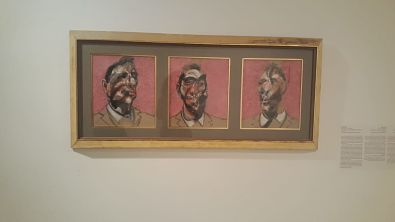
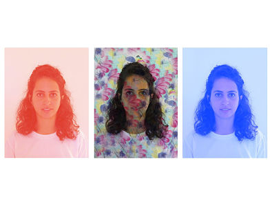

פרוטרט עצמי
במסגרת קורס תקשורת חזותית התבקשנו ליצור פרוטרט עצמי בהשראת סיור במוזיאון תל אביב. בחרתי ביצירה Three Studies for Portrait of George Dyer 1964 בחרתי ביצירה זו בהקשר החזותי, להראות שלוש תמונות בעלי מוטיב חוזר אך בעלות שוני ברור כדי להראות מצבים שונים ורגשות אחרים שקיימים בי. בחרתי להראות תמונה פשוטה וחסרת הבעה על המנת להדגיש את צבעי הרקע אשר מעבירים הם את המסר.
ההשאראה

התוצר הסופי
